第04讲 解题技巧专题：整式中化简求值与含字母参数的问题(8类热点题型讲练)
第04讲 解题技巧专题：整式中化简求值与含字母参数的问题(8类热点题型讲练)
目录
【考点一 已知同类项求指数中字母或代数式的值】 1
【考点二 整式加减中含括号及括号前有系数】 3
【考点三 整式加减运算中错解复原问题】 5
【考点四 整式加减中的化简求值】 11
【考点五 整式加减运算中不含某一项的问题】 15
【考点六 整式加减运算中取值与字母无关的问题】 17
【考点七 整式加减中的新定义型问题】 22
【考点八 整式加减应用中图形面积与字母无关的问题】 26
【考点一 已知同类项求指数中字母或代数式的值】
例题：（23-24七年级上·吉林四平·期末）若 与
与
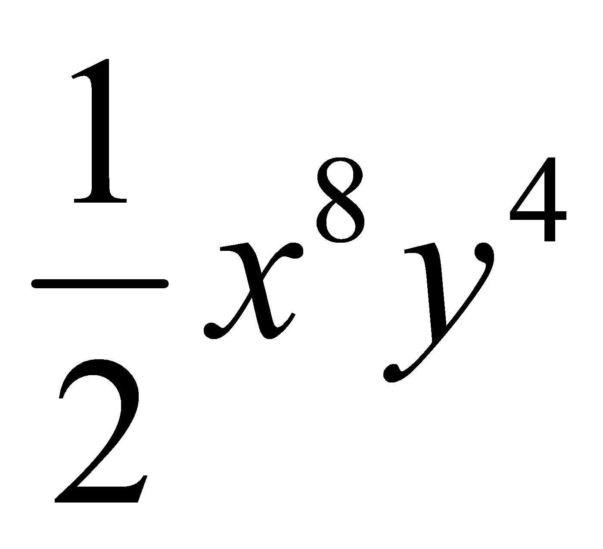
能够合并，则 的值是 ．
的值是 ．【变式训练】
1．（23-24七年级下·全国·单元测试）若 与
与 是同类项，则
是同类项，则
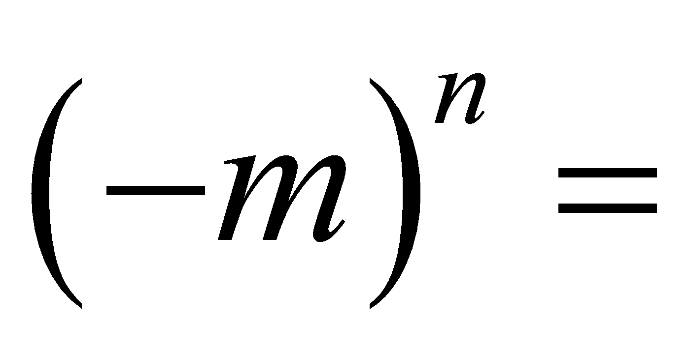
2．（24-25七年级上·全国·单元测试）若
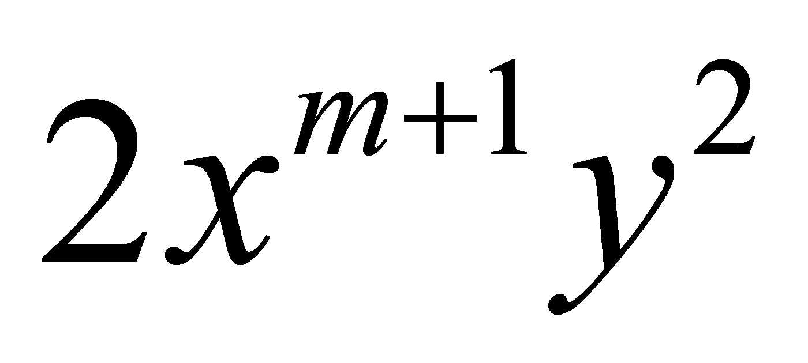
与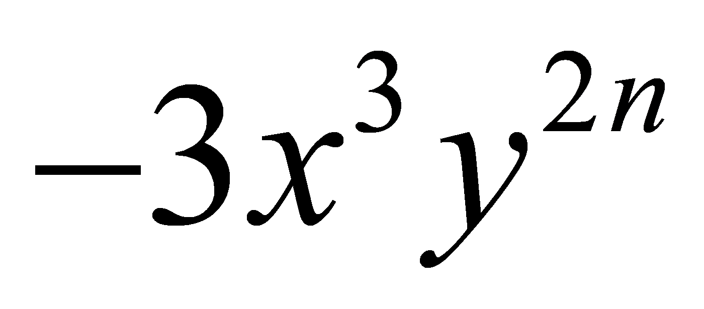
是同类项，则 的值为
的值为 3．（23-24七年级上·广西桂林·期中）如果单项式 与
与
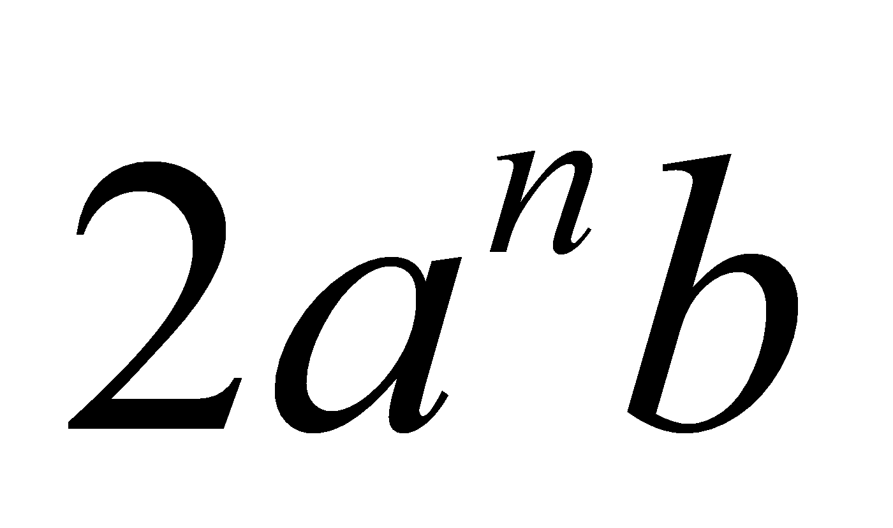
的和仍然是一个单项式，则 ．
．4．（23-24七年级下·重庆·开学考试）如果单项式 与
与 是同类项，那么
是同类项，那么
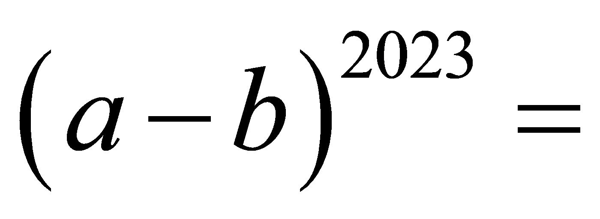
．5．（23-24七年级上·广西百色·期末）先化简再求值：若
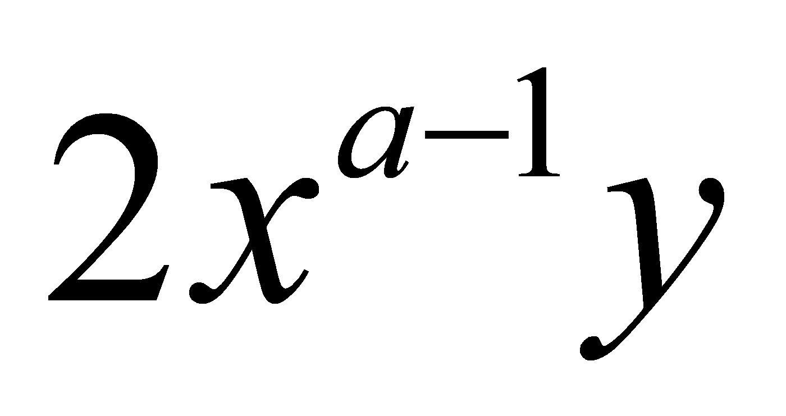
与 是同类项，求
是同类项，求 的值．
的值．【考点二 整式加减中含括号及括号前有系数】
例题：（23-24七年级上·江苏连云港·期中）化简：
【变式训练】
1．（23-24七年级上·吉林·期末）计算：
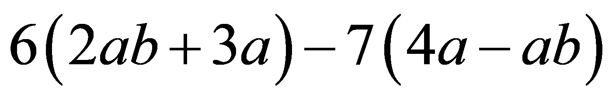
．2．（23-24七年级上·广东中山·期末）化简： ．
．
3．（23-24七年级上·江苏无锡·期中）化简
(1)
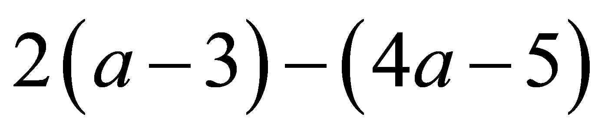
；(2) ．
．
4．（23-24七年级上·浙江杭州·期末）计算：
(1)
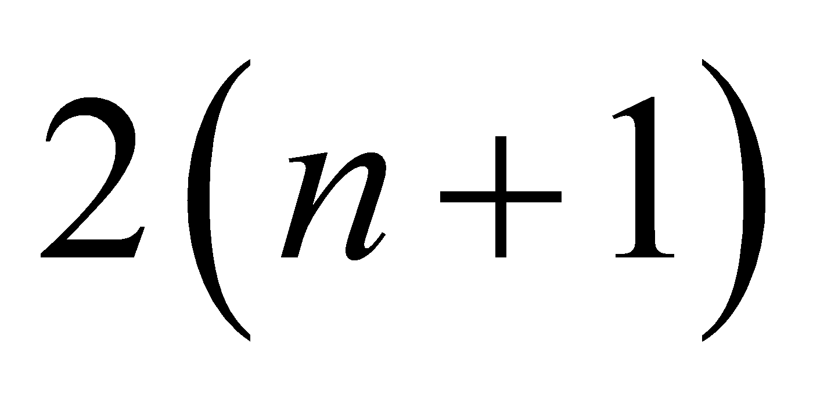
．(2) ．
．
(3) ．
．
5．（23-24七年级上·山东济宁·期中）化简：
(1)
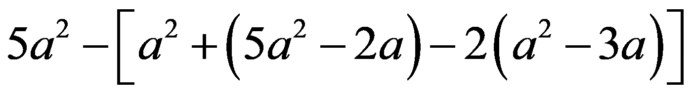
；(2)
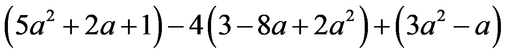
．【考点三 整式加减运算中错解复原问题】
例题：（23-24七年级上·河南鹤壁·期末）下面是小方同学进行整式化简的过程，请认真阅读并完成相应的任务.

 第一步
第一步
 第二步
第二步
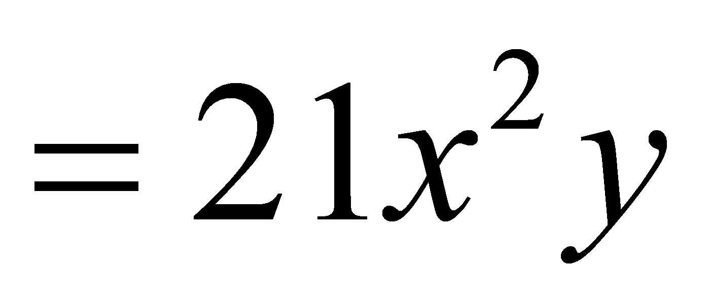
，第三步任务1：
①以上化简步骤中，第一步的依据是________；
②以上化简步骤中，第________步开始出现错误，这一步错误的原因是________________.
任务2：请写出该整式正确的化简过程，并计算当 ，
， 时该整式的值.
时该整式的值.
【变式训练】
1．（22-23七年级上·广西南宁·期中）下面是小帆同学进行整式化简的过程，认真阅读并完成相应的问题．

 …………第一步
…………第一步
 ………………第二步
………………第二步
 ………………………………第三步
………………………………第三步
(1)以上化简步骤中，第__________步开始出现错误，错误的原因是__________；
(2)请写出正确的化简过程，并计算当 时该整式的值．
时该整式的值．
2．（23-24七年级上·河南周口·阶段练习）下面是小林同学化简的一道题，其解答过程如下：
化简： 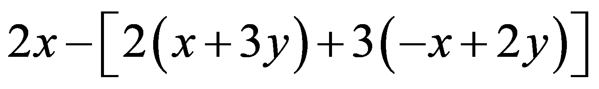 ，解：原式
|
 第一步
第一步 第二步
第二步 第三步
第三步(1)小林同学开始出现错误是在第______步，错误的原因是__________．
(2)请给出正确的解答过程．
3．（23-24七年级上·河南洛阳·期中）阅读下面材料，并完成相应学习任务．
林林同学在计算
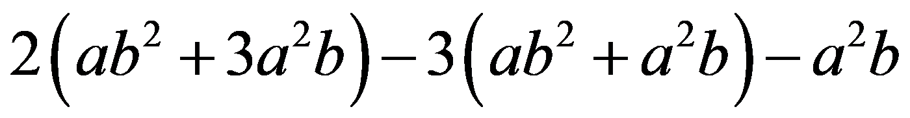
时，写出如下计算步骤：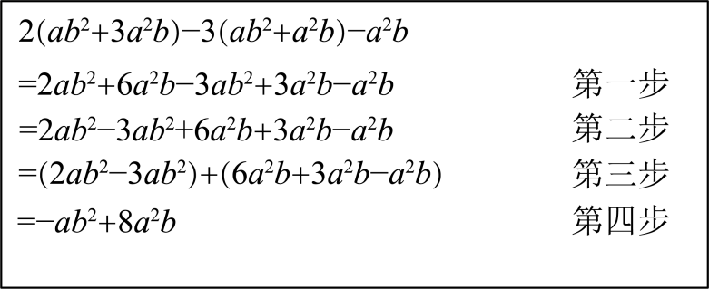
(1)以上步骤第______步开始出现了错误，错误的原因是______．
(2)请写出正确的化简过程并求值，其中 ，
， ．
．
4．（23-24七年级上·河南许昌·期中）下面是小宇同学进行整式化简的过程，请认真阅读并完成相应任务．

 …………………………………第一步
…………………………………第一步
 ……………………………………第二步
……………………………………第二步
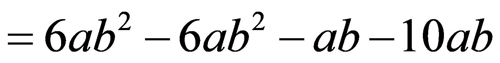
……………………………………第三步 …………………………………………………………第四步
…………………………………………………………第四步
任务一：
①以上化简步骤中，第一步的依据是______；
②以上化简步骤中，从第______步开始出现错误，错误的原因是______；
任务二：
请你写出该整式正确的化简过程，并求当 ，
，
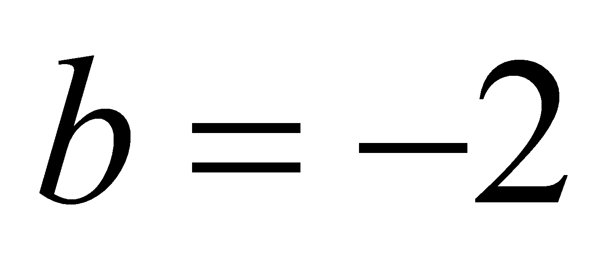
时该整式的值．5．（23-24七年级上·河南洛阳·期中）下面是小彬同学进行整式化简的过程，请认真阅读并完成相应任务．

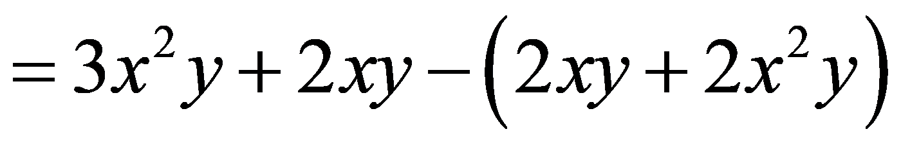
第一步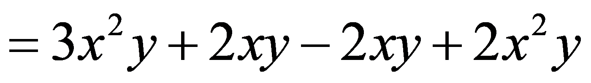
第二步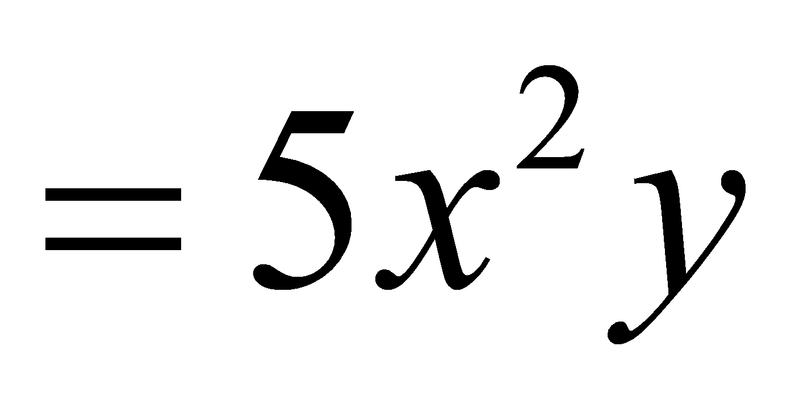
第三步(1)任务一：填空：①以上化简步骤中，第一步的依据是________；
②以上化简步骤中，第________步开始出现错误，这一步错误的原因是________；
③请写出该整式正确的化简过程，并计算当 时该整式的值．
时该整式的值．
(2)任务二：除纠正上述错误外，请你根据平时的学习经验，就整式的加减还需要注意的事项给其他同学提一条合理化建议．
【考点四 整式加减中的化简求值】
例题：（23-24七年级上·广西桂林·期中）先化简，再求值： ，其中，．
，其中，．
【变式训练】
1．（22-23七年级上·宁夏中卫·期末）先化简，再代入求值．
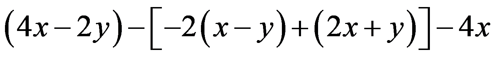
，其中 ；
；2．（23-24七年级下·重庆南岸·开学考试）先化简，再求值 ，其中
，其中 ，
， ．
．
3．（2024七年级上·全国·专题练习）先化简，再求值：
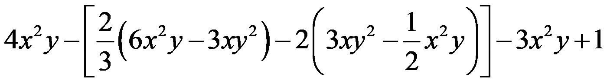
，其中x，y满足 ．
．4．（2024七年级上·上海·专题练习）先化简，再求值：
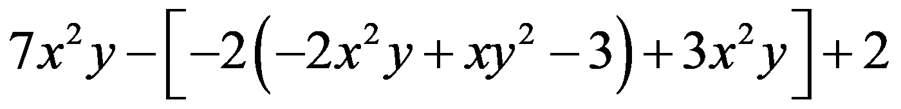
，其中 ，
，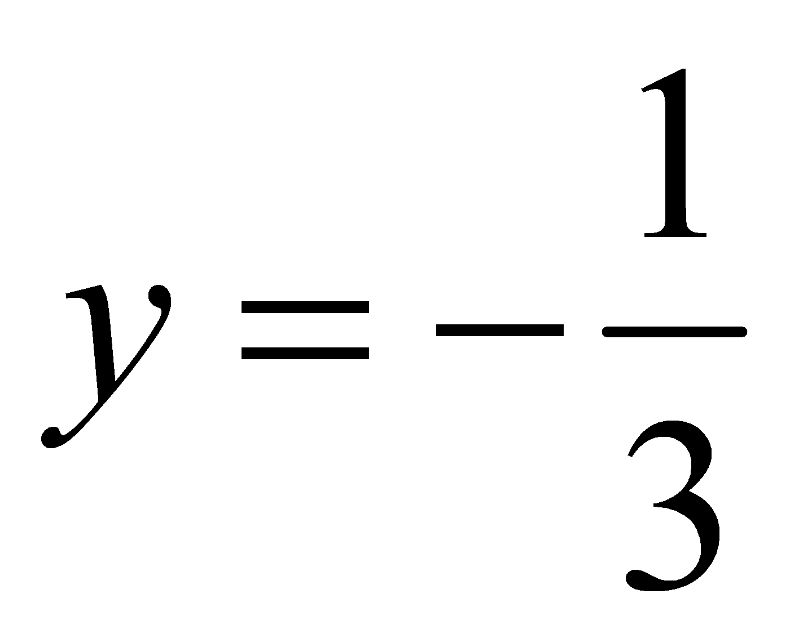
且 ．
．5．（23-24七年级上·广西桂林·期中）已知
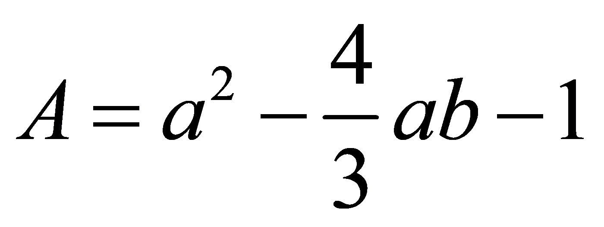
，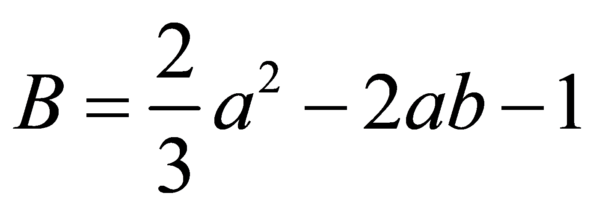
．(1)求 ；
；
(2)当 时，求的值；
时，求的值；
(3)若 ，求的值．
，求的值．
【考点五 整式加减运算中不含某一项的问题】
例题：（23-24六年级下·黑龙江大庆·期中）多项式
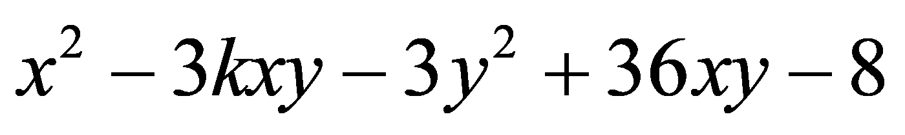
化简后不含 项，则
项，则 为
为 【变式训练】
1．（2024七年级上·全国·专题练习）多项式 中不含项，则常数k的值是 ．
中不含项，则常数k的值是 ．
2．（23-24七年级上·吉林·阶段练习）要使多项式 化简后不含
化简后不含 的二次项，则
的二次项，则 ．
．
3．（23-24七年级上·河南新乡·期末）已知关于x的多项式
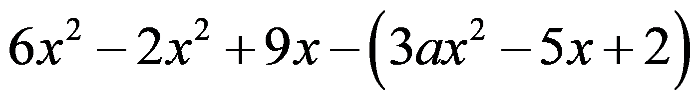
的取值不含 项，那么a的值是 ．
项，那么a的值是 ．4．（23-24七年级下·内蒙古呼和浩特·开学考试）若关于x，y的多项式 中不含三次项，则
中不含三次项，则 ．
．
5．（23-24六年级下·北京海淀·期中）若关于x，y的多项式 不含二次项，则
不含二次项，则 的值 ．
的值 ．
【考点六 整式加减运算中取值与字母无关的问题】
例题：（23-24七年级上·安徽六安·期末）已知代数式
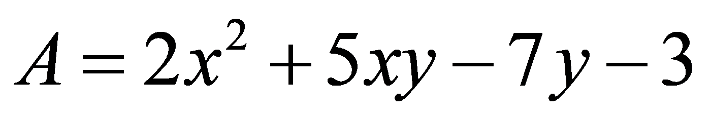
，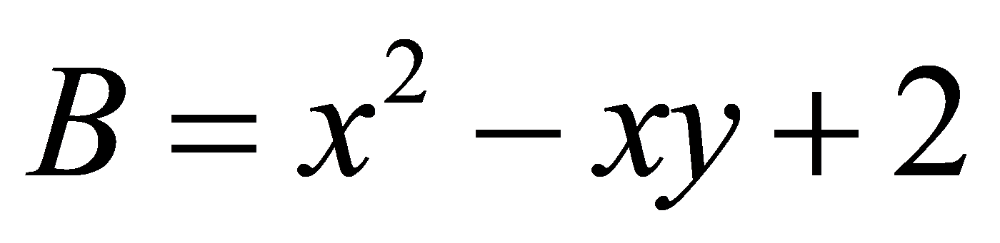
．(1)求
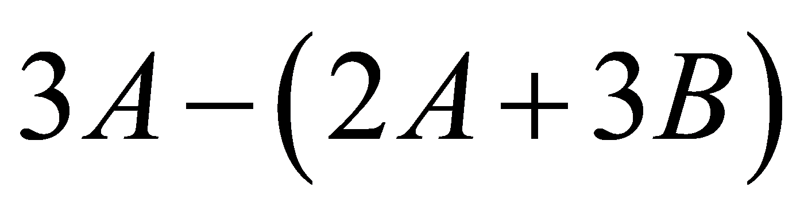
．(2)若 的值与y的取值无关，求x的值．
的值与y的取值无关，求x的值．
【变式训练】
1．（23-24七年级上·甘肃庆阳·期末）已知
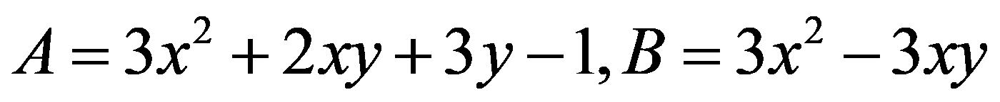
．(1)计算 ；
；
(2)若的值与 的取值无关，求的值．
的取值无关，求的值．
2．（21-22七年级上·广东湛江·期中）已知 ，
，
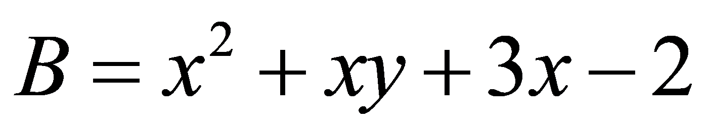
．(1)先化简，且当 时，求的值；
时，求的值；
(2)若的值与无关，求的值．
3．（23-24七年级上·甘肃天水·阶段练习）已知式子
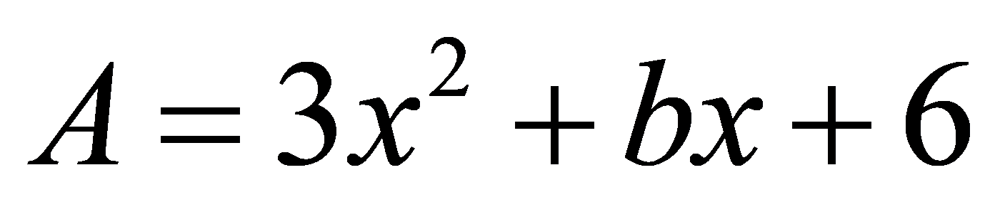
， ．
．(1)当时，化简 ；
；
(2)若的值与无关，求 ．
．
4．（22-23七年级上·江苏扬州·期中）已知多项式 ．
．
(1)先化简，再求值，其中
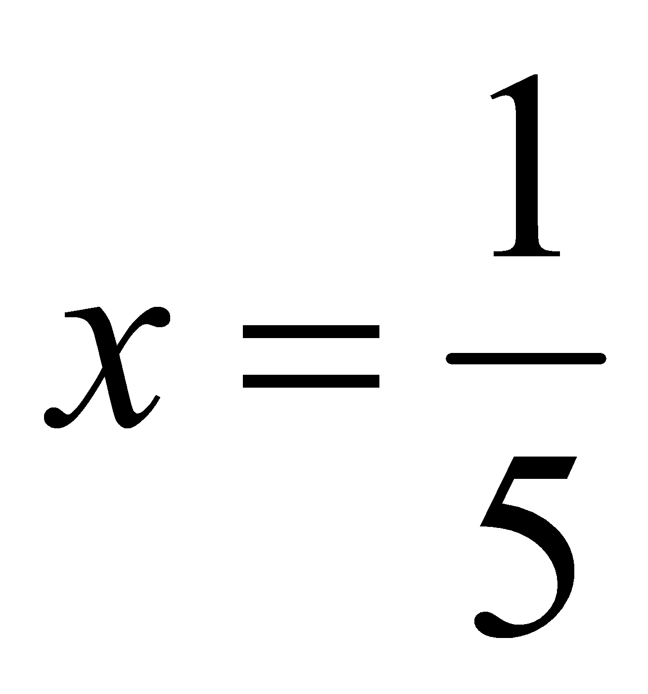
， ；
；(2)若多项式M与字母x的取值无关，求y的值．
5．（23-24七年级上·贵州黔东南·阶段练习）已知： ，
，
(1)求的值；
(2)若的值与 的取值无关，求的值．
的取值无关，求的值．
6．（23-24七年级上·湖北省直辖县级单位·阶段练习）已知 ．
．
(1)当
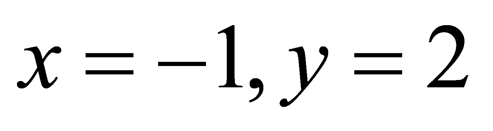
时，求的值；(2)若
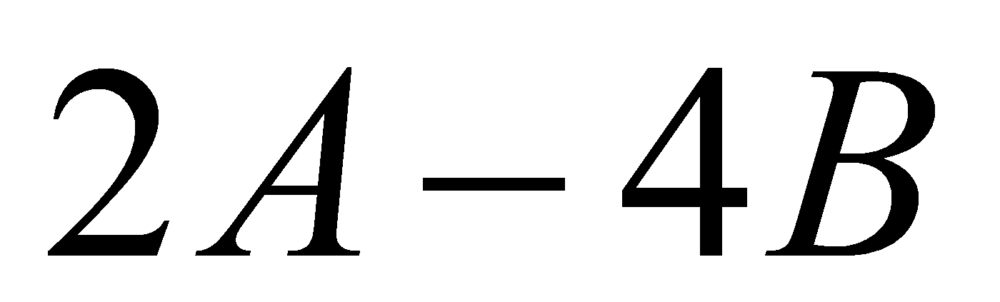
的值与y无关，求x的值．【考点七 整式加减中的新定义型问题】
例题：（23-24七年级上·河南南阳·阶段练习）定义新运算：满足
(1)当 ，
， 化简
化简
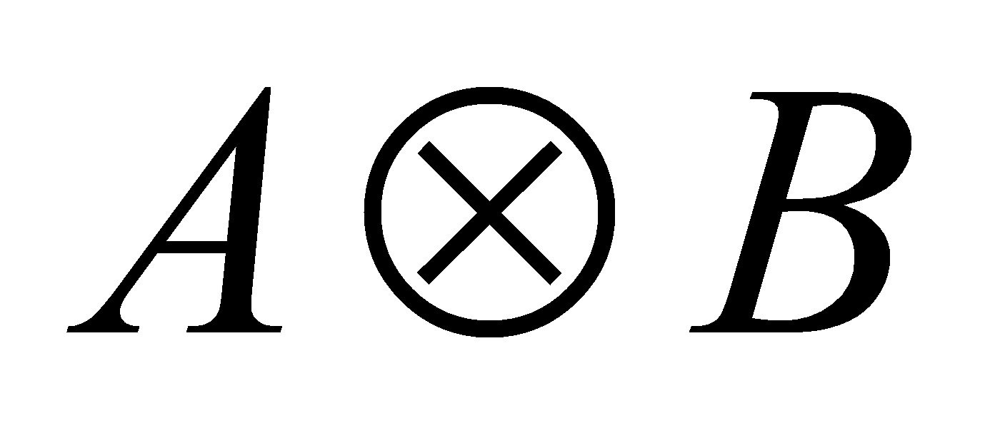
；(2)如果化简的结果与
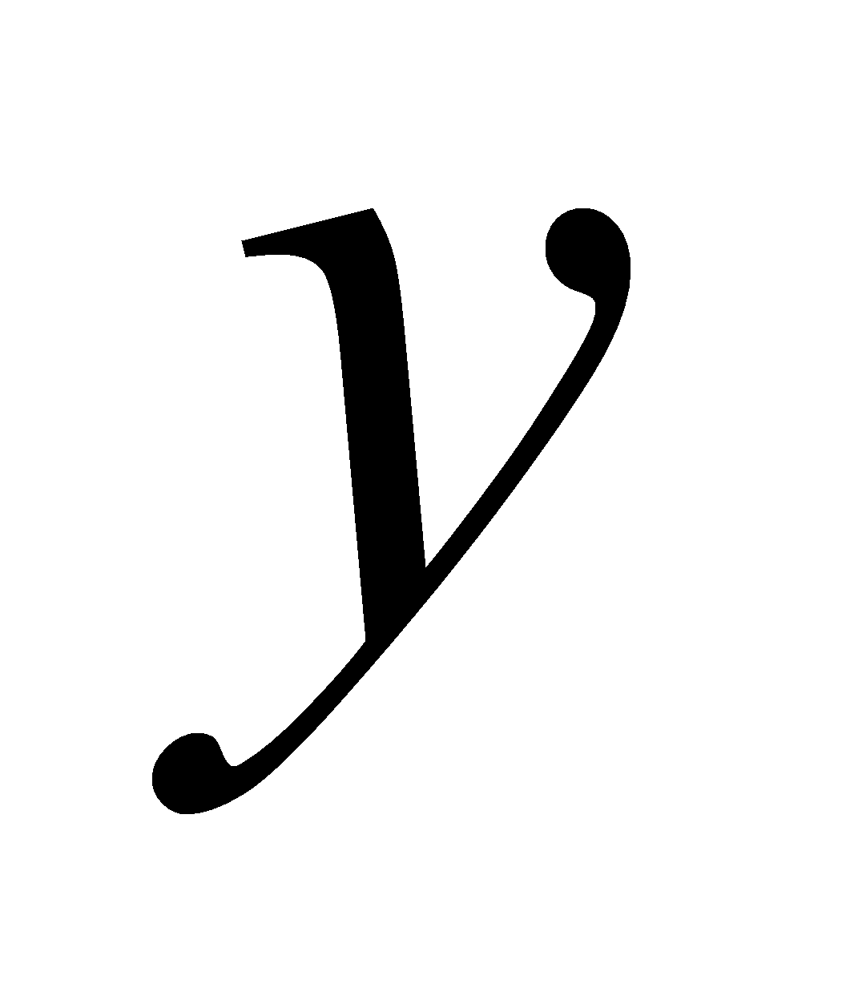
无关，求的值．1．（23-24七年级上·江苏无锡·阶段练习）定义：若 ，则称
，则称
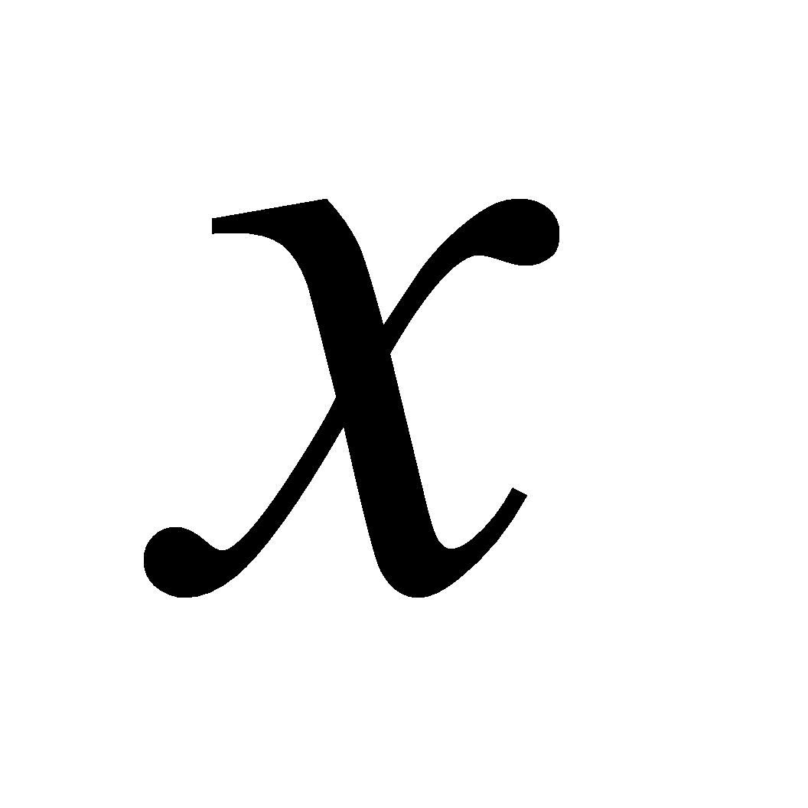
与 是关于
是关于 的相关数．
的相关数．(1)若 与
与 是关于
是关于 的相关数，则
的相关数，则 ______．
______．
(2)若 与
与 是关于
是关于  的相关数，
的相关数， ，
， 的值与
的值与 无关，求的值．
无关，求的值．
2．（22-23七年级上·福建泉州·阶段练习）定义：若代数式 ，满足
，满足
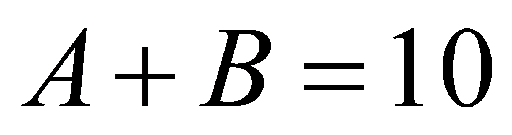
，则称与是关于10的完美数．(1)若代数式与
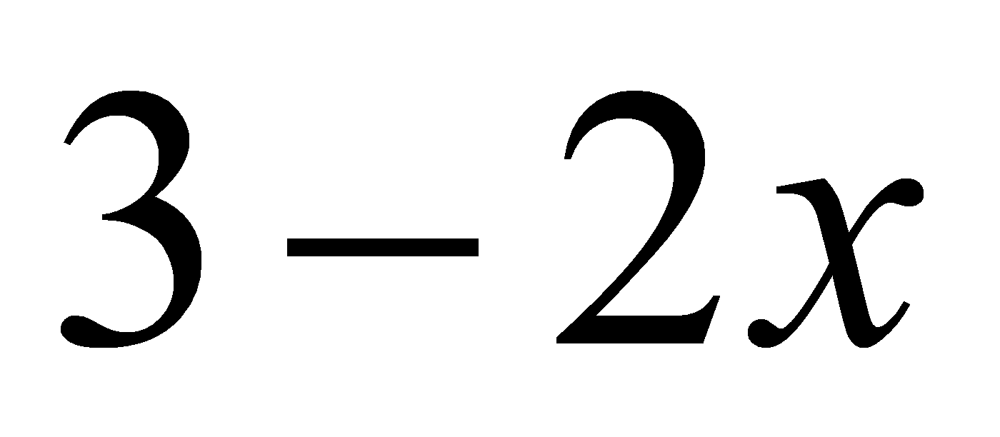
是关于10的完美数，求；（用含 的代数式表示）
的代数式表示）(2)若
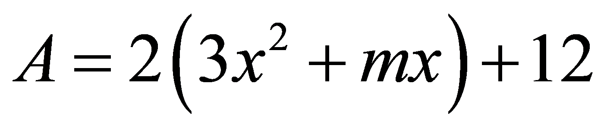
，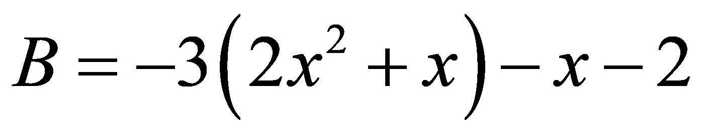
，且与是关于10的完美数，求的值．3．（23-24七年级上·吉林长春·阶段练习）定义：若
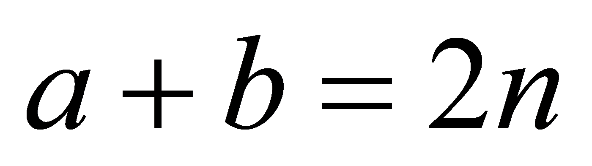
，则称a与b是关于数n的平均数．比如3与 是关于
是关于 的平均数，7与13是关于10的平均数．
的平均数，7与13是关于10的平均数．(1)填空：2与_______是关于 的平均数，______与
的平均数，______与 是关于2的平均数；
是关于2的平均数；
(2)现有 与
与 （k为常数），且a与b始终是关于数n的平均数，与x的取值无关，求n的值．
（k为常数），且a与b始终是关于数n的平均数，与x的取值无关，求n的值．
4．（23-24八年级上·山西吕梁·期末）阅读理解题
我们定义：如果两个多项式与的差为常数，且这个常数为正数，则称是的“雅常式”，这个常数称为关于的“雅常值”，如多项式 ，
， ，
，

 ，则是的“雅常式”，关于的“雅常值”为9
，则是的“雅常式”，关于的“雅常值”为9
(1)已知多项式 ，
，
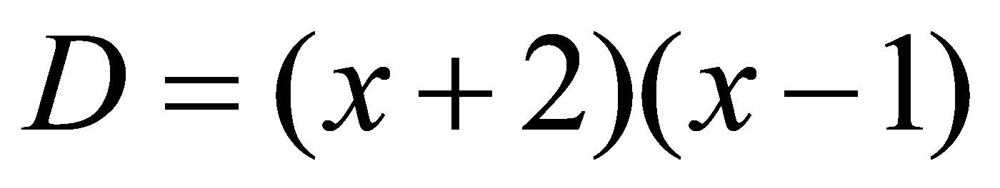
，则 关于
关于 的“雅常值”是______；
的“雅常值”是______；(2)多项式 是多项式
是多项式 的“雅常式”且“雅常值”是3，已知多项式
的“雅常式”且“雅常值”是3，已知多项式 ，求多项式
，求多项式
(3)已知多项式 （
（ 为常数），
为常数）， ，
， 是
是 的“雅常式”，求关于的“雅常值”
的“雅常式”，求关于的“雅常值”
【考点八 整式加减应用中图形面积与字母无关的问题】
例题：（2023春·浙江·七年级期中）七年级学习代数式求值时，遇到这样一类题“代数式
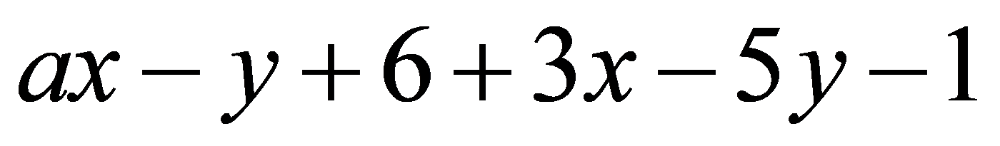
的值与x的取值无关，求a的值”，通常的解题方法是：把x、y看作字母，a看作系数合并同类项，因为代数式的值与x的取值无关，所以含x项的系数为0，即原式
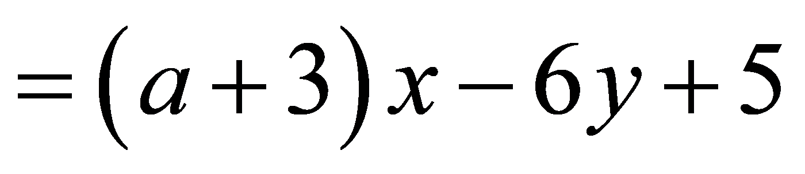
，所以 ，则
，则 ．
．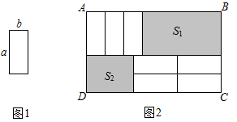
(1)若关于x的多项式 的值与x的取值无关，求m值；
的值与x的取值无关，求m值；
(2)已知，；且 的值与x无关，求y的值；
的值与x无关，求y的值；
(3)7张如图1的小长方形，长为a，宽为b，按照图2方式不重叠地放在大长方形 内，大长方形中未被覆盖的两个部分(图中阴影部分)，设右上角的面积为
内，大长方形中未被覆盖的两个部分(图中阴影部分)，设右上角的面积为 ，左下角的面积为，当
，左下角的面积为，当 的长变化时，的值始终保持不变，求a与b的等量关系．
的长变化时，的值始终保持不变，求a与b的等量关系．
【变式训练】
1．（2023秋·河北保定·七年级校考期末）学习代数式求值时，遇到这样一类题“代数式的值与x的取值无关，求m的值”，通常的解题方法是：把x、y看作字母，m看作系数合并同类项，因为代数式的值与x的取值无关，所以含x的系数为0，即原式 ，所以
，所以 ，则
，则 ．
．
(1)若多项式 的值与x的取值无关，求a值；
的值与x的取值无关，求a值；
(2)5张如图1的小长方形，长为a，宽为b，按照图2方式不重叠地放在大长方形内，大长方形中未被覆盖的两个部分（图中阴影部分)，设左上角的面积为，右下角的面积为，当的长变化时，发现 的值始终保持不变，请求出a与b的数量关系．
的值始终保持不变，请求出a与b的数量关系．